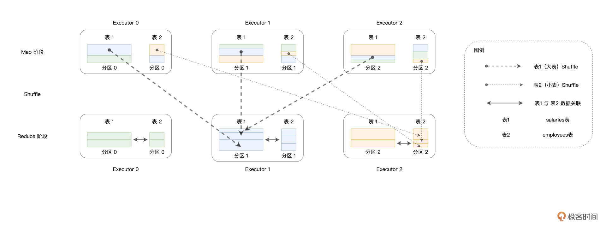
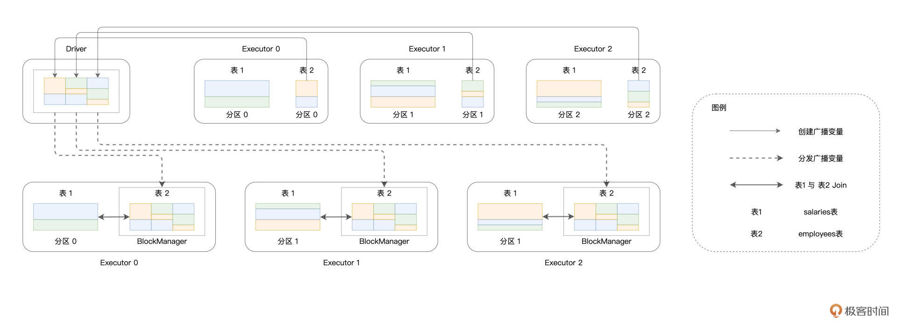
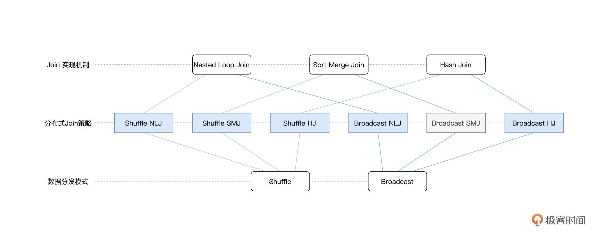
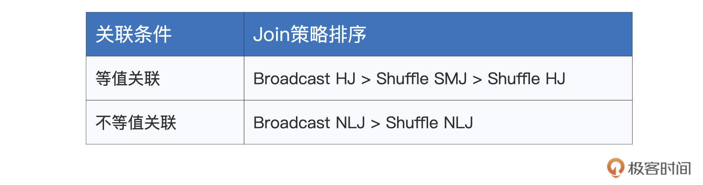
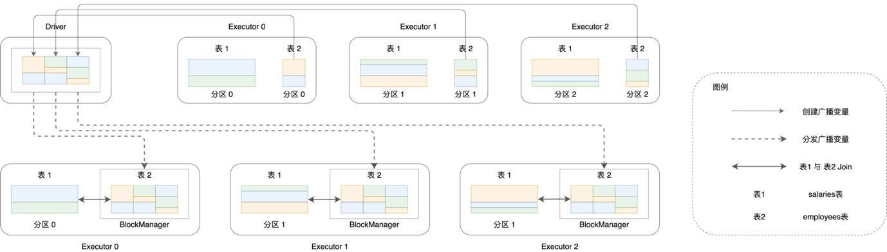

- 00 开篇词 入门Spark，你需要学会“三步走”.md.html
- 01 Spark：从“大数据的Hello World”开始.md.html
- 02 RDD与编程模型：延迟计算是怎么回事？.md.html
- 03 RDD常用算子（一）：RDD内部的数据转换.md.html
- 04 进程模型与分布式部署：分布式计算是怎么回事？.md.html
- 05 调度系统：如何把握分布式计算的精髓？.md.html
- 06 Shuffle管理：为什么Shuffle是性能瓶颈？.md.html
- 07 RDD常用算子（二）：Spark如何实现数据聚合？.md.html
- 08 内存管理：Spark如何使用内存？.md.html
- 09 RDD常用算子（三）：数据的准备、重分布与持久化.md.html
- 10 广播变量 & 累加器：共享变量是用来做什么的？.md.html
- 11 存储系统：数据到底都存哪儿了？.md.html
- 12 基础配置详解：哪些参数会影响应用程序稳定性？.md.html
- 13 Spark SQL：让我们从“小汽车摇号分析”开始.md.html
- 14 台前幕后：DataFrame与Spark SQL的由来.md.html
- 15 数据源与数据格式：DataFrame从何而来？.md.html
- 16 数据转换：如何在DataFrame之上做数据处理？.md.html
- 17 数据关联：不同的关联形式与实现机制该怎么选？.md.html
- 18 数据关联优化：都有哪些Join策略，开发者该如何取舍？.md.html
- 19 配置项详解：哪些参数会影响应用程序执行性能？.md.html
- 20 Hive + Spark强强联合：分布式数仓的不二之选.md.html
- 21 Spark UI（上）：如何高效地定位性能问题？.md.html
- 22 Spark UI（下）：如何高效地定位性能问题？.md.html
- 23 Spark MLlib：从“房价预测”开始.md.html
- 24 特征工程（上）：有哪些常用的特征处理函数？.md.html
- 25 特征工程（下）：有哪些常用的特征处理函数？.md.html
- 26 模型训练（上）：决策树系列算法详解.md.html
- 27 模型训练（中）：回归、分类和聚类算法详解.md.html
- 28 模型训练（下）：协同过滤与频繁项集算法详解.md.html
- 29 Spark MLlib Pipeline：高效开发机器学习应用.md.html
- 30 Structured Streaming：从“流动的Word Count”开始.md.html
- 31 新一代流处理框架：Batch mode和Continuous mode哪家强？.md.html
- 32 Window操作&Watermark：流处理引擎提供了哪些优秀机制？.md.html
- 33 流计算中的数据关联：流与流、流与批.md.html
- 34 Spark + Kafka：流计算中的“万金油”.md.html
- 用户故事 小王：保持空杯心态，不做井底之蛙.md.html
- 结束语 进入时间裂缝，持续学习.md.html
- 捐赠
18 数据关联优化：都有哪些Join策略，开发者该如何取舍？
你好，我是吴磊。
在上一讲，我们分别从关联形式与实现机制这两个方面，对数据分析进行了讲解和介绍。对于不同关联形式的用法和实现机制的原理，想必你已经了然于胸。不过，在大数据的应用场景中，数据的处理往往是在分布式的环境下进行的，在这种情况下，数据关联的计算还要考虑网络分发这个环节。
我们知道，在分布式环境中，Spark支持两类数据分发模式。一类是我们在[第7讲]学过的Shuffle，Shuffle通过中间文件来完成Map阶段与Reduce阶段的数据交换，因此它会引入大量的磁盘与网络开销。另一类是我们在[第10讲]介绍的广播变量（Broadcast Variables），广播变量在Driver端创建，并由Driver分发到各个Executors。
因此，从数据分发模式的角度出发，数据关联又可以分为Shuffle Join和Broadcast Join这两大类。将两种分发模式与Join本身的3种实现机制相结合，就会衍生出分布式环境下的6种Join策略。
那么，对于这6种Join策略，Spark SQL是如何支持的呢？它们的优劣势与适用场景都有哪些？开发者能否针对这些策略有的放矢地进行取舍？今天这一讲，咱们就来聊聊这些话题。
Join实现机制的优势对比
首先，我们先来说一说不同Join实现机制本身的一些特性与适用场景，从而为后续的讨论打好基础。需要说明的是，咱们这里说的Join实现机制，指的是算法层面的工作原理，不同的算法有着不同的适用场景与复杂度，我们需要对它们有足够认识并有所区分。
我们知道，Join支持3种实现机制，它们分别是Hash Join、Sort Merge Join和Nested Loop Join。三者之中，Hash Join的执行效率最高，这主要得益于哈希表O(1)的查找效率。不过，在Probe阶段享受哈希表的“性能红利”之前，Build阶段得先在内存中构建出哈希表才行。因此，Hash Join这种算法对于内存的要求比较高，适用于内存能够容纳基表数据的计算场景。
相比之下，Sort Merge Join就没有内存方面的限制。不论是排序、还是合并，SMJ都可以利用磁盘来完成计算。所以，在稳定性这方面，SMJ更胜一筹。
而且与Hash Join相比，SMJ的执行效率也没有差太多，前者是O(M)，后者是O(M + N)，可以说是不分伯仲。当然，O(M + N)的复杂度得益于SMJ的排序阶段。因此，如果准备参与Join的两张表是有序表，那么这个时候采用SMJ算法来实现关联简直是再好不过了。
与前两者相比，Nested Loop Join看上去有些多余，嵌套的双层for循环带来的计算复杂度最高：O(M * N)。不过，尺有所短寸有所长，执行高效的HJ和SMJ只能用于等值关联，也就是说关联条件必须是等式，像salaries(“id”) < employees(“id”)这样的关联条件，HJ和SMJ是无能为力的。相反，NLJ既可以处理等值关联（Equi Join），也可以应付不等值关联（Non Equi Join），可以说是数据关联在实现机制上的最后一道防线。
Shuffle Join与Broadcast Join
分析完不同Join机制的优缺点之后，接下来，我们再来说说分布式环境下的Join策略。与单机环境不同，在分布式环境中，两张表的数据各自散落在不同的计算节点与Executors进程。因此，要想完成数据关联，Spark SQL就必须先要把Join Keys相同的数据，分发到同一个Executors中去才行。
我们还是用上一讲的员工信息和薪资表来举例，如果我们打算对salaries和employees两张表按照id列做关联，那么，对于id字段值相同的薪资数据与员工数据，我们必须要保证它们坐落在同样的Executors进程里，Spark SQL才能利用刚刚说的HJ、SMJ、以及NLJ，以Executors（进程）为粒度并行地完成数据关联。
换句话说，以Join Keys为基准，两张表的数据分布保持一致，是Spark SQL执行分布式数据关联的前提。而能满足这个前提的途径只有两个：Shuffle与广播。这里我额外提醒一下，Shuffle和广播变量我们在前面的课程有过详细的介绍，如果你记不太清了，不妨翻回去看一看。
回到正题，开篇咱们说到，如果按照分发模式来划分，数据关联可以分为Shuffle Join和Broadcast Join两大类。通常来说，在执行性能方面，相比Shuffle Join，Broadcast Join往往会更胜一筹。为什么这么说呢？
接下来，我们就一起来分析分析，这两大类Join在分布式环境下的执行过程，然后再来回答这个问题。理解了执行过程，你自然就能解答这个问题了。
Shuffle Join
在没有开发者干预的情况下，Spark SQL默认采用Shuffle Join来完成分布式环境下的数据关联。对于参与Join的两张数据表，Spark SQL先是按照如下规则，来决定不同数据记录应当分发到哪个Executors中去：
- 根据Join Keys计算哈希值
- 将哈希值对并行度（Parallelism）取模
由于左表与右表在并行度（分区数）上是一致的，因此，按照同样的规则分发数据之后，一定能够保证id字段值相同的薪资数据与员工数据坐落在同样的Executors中。

如上图所示，颜色相同的矩形代表Join Keys相同的数据记录，可以看到，在Map阶段，数据分散在不同的Executors当中。经过Shuffle过后，Join Keys相同的记录被分发到了同样的Executors中去。接下来，在Reduce阶段，Reduce Task就可以使用HJ、SMJ、或是NLJ算法在Executors内部完成数据关联的计算。
Spark SQL之所以在默认情况下一律采用Shuffle Join，原因在于Shuffle Join的“万金油”属性。也就是说，在任何情况下，不论数据的体量是大是小、不管内存是否足够，Shuffle Join在功能上都能够“不辱使命”，成功地完成数据关联的计算。然而，有得必有失，功能上的完备性，往往伴随着的是性能上的损耗。
学习过 [Shuffle的原理]（第6讲）之后，不用我多说，Shuffle的弊端想必你早已烂熟于心。我们知道，从CPU到内存，从磁盘到网络，Shuffle的计算几乎需要消耗所有类型的硬件资源。尤其是磁盘和网络开销，这两座大山往往是应用执行的性能瓶颈。
那么问题来了，除了Shuffle Join这种“万金油”式的Join策略，开发者还有没有其他效率更高的选择呢？答案当然是肯定的，Broadcast Join就是用来克制Shuffle的“杀手锏”。
Broadcast Join
在广播变量那一讲（第10讲），我们讲过把用户数据结构封装为广播变量的过程。实际上，Spark不仅可以在普通变量上创建广播变量，在分布式数据集（如RDD、DataFrame）之上也可以创建广播变量。这样一来，对于参与Join的两张表，我们可以把其中较小的一个封装为广播变量，然后再让它们进行关联。
光说思路你可能体会不深，我们还是结合例子理解。以薪资表和员工表为例，只要对代码稍加改动，我们就能充分利用广播变量的优势。
更改后的代码如下所示。
import org.apache.spark.sql.functions.broadcast
// 创建员工表的广播变量
val bcEmployees = broadcast(employees)
// 内关联，PS：将原来的employees替换为bcEmployees
val jointDF: DataFrame = salaries.join(bcEmployees, salaries("id") === employees("id"), "inner")
在Broadcast Join的执行过程中，Spark SQL首先从各个Executors收集employees表所有的数据分片，然后在Driver端构建广播变量bcEmployees，构建的过程如下图实线部分所示。

可以看到，散落在不同Executors内花花绿绿的矩形，代表的正是employees表的数据分片。这些数据分片聚集到一起，就构成了广播变量。接下来，如图中虚线部分所示，携带着employees表全量数据的广播变量bcEmployees，被分发到了全网所有的Executors当中去。
在这种情况下，体量较大的薪资表数据只要“待在原地、保持不动”，就可以轻松关联到跟它保持之一致的员工表数据了。通过这种方式，Spark SQL成功地避开了Shuffle这种“劳师动众”的数据分发过程，转而用广播变量的分发取而代之。
尽管广播变量的创建与分发同样需要消耗网络带宽，但相比Shuffle Join中两张表的全网分发，因为仅仅通过分发体量较小的数据表来完成数据关联，Spark SQL的执行性能显然要高效得多。这种小投入、大产出，用极小的成本去博取高额的性能收益，可以说是“四两拨千斤”！
Spark SQL支持的Join策略
不论是Shuffle Join，还是Broadcast Join，一旦数据分发完毕，理论上可以采用HJ、SMJ和NLJ这3种实现机制中的任意一种，完成Executors内部的数据关联。因此，两种分发模式，与三种实现机制，它们组合起来，总共有6种分布式Join策略，如下图所示。

虽然组合起来选择多样，但你也不必死记硬背，抓住里面的规律才是关键，我们一起来分析看看。
在这6种Join策略中，Spark SQL支持其中的5种来应对不用的关联场景，也即图中蓝色的5个矩形。对于等值关联（Equi Join），Spark SQL优先考虑采用Broadcast HJ策略，其次是Shuffle SMJ，最次是Shuffle HJ。对于不等值关联（Non Equi Join），Spark SQL优先考虑Broadcast NLJ，其次是Shuffle NLJ。

不难发现，不论是等值关联、还是不等值关联，只要Broadcast Join的前提条件成立，Spark SQL一定会优先选择Broadcast Join相关的策略。那么问题来了，Broadcast Join的前提条件是什么呢？
回顾Broadcast Join的工作原理图，我们不难发现，Broadcast Join得以实施的基础，是被广播数据表（图中的表2）的全量数据能够完全放入Driver的内存、以及各个Executors的内存，如下图所示。

另外，为了避免因广播表尺寸过大而引入新的性能隐患，Spark SQL要求被广播表的内存大小不能超过8GB。
好，这里我们简单总结一下。只要被广播表满足上述两个条件，我们就可以利用SQL Functions中的broadcast函数来创建广播变量，进而利用Broadcast Join策略来提升执行性能。
当然，在Broadcast Join前提条件不成立的情况下，Spark SQL就会退化到Shuffle Join的策略。在不等值的数据关联中，Spark SQL只有Shuffle NLJ这一种选择，因此咱们无需赘述。
但在等值关联的场景中，Spark SQL有Shuffle SMJ和Shuffle HJ这两种选择。尽管如此，Shuffle SMJ与Shuffle HJ的关系，就像是关羽和周仓的关系。周仓虽说武艺也不错，但他向来只是站在关公后面提刀。大战在即，刘备仰仗的自然是站在前面的关羽，而很少启用后面的周仓。在Shuffle SMJ与Shuffle HJ的取舍上，Spark SQL也是如此。
学习过Shuffle之后，我们知道，Shuffle在Map阶段往往会对数据做排序，而这恰恰正中SMJ机制的下怀。对于已经排好序的两张表，SMJ的复杂度是O(M + N)，这样的执行效率与HJ的O(M)可以说是不相上下。再者，SMJ在执行稳定性方面，远胜于HJ，在内存受限的情况下，SMJ可以充分利用磁盘来顺利地完成关联计算。因此，考虑到Shuffle SMJ的诸多优势，Shuffle HJ就像是关公后面的周仓，Spark SQL向来对之视而不见，所以对于HJ你大概知道它的作用就行。
重点回顾
好啦，到此为止，今天的课程就全部讲完了，我们一起来做个总结。首先，我们一起分析、对比了单机环境中不同Join机制的优劣势，我把它们整理到了下面的表格中，供你随时查看。
在分布式环境中，要想利用上述机制完成数据关联，Spark SQL首先需要把两张表中Join Keys一致的数据分发到相同的Executors中。
因此，数据分发是分布式数据关联的基础和前提。Spark SQL支持Shuffle和广播两种数据分发模式，相应地，Join也被分为Shuffle Join和Broadcast Join，其中Shuffle Join是默认的关联策略。关于两种策略的优劣势对比，我也整理到了如下的表格中，供你参考。

结合三种实现机制和两种数据分发模式，Spark SQL支持5种分布式Join策略。对于这些不同的Join策略，Spark SQL有着自己的选择偏好，我把它整理到了如下的表格中，供你随时查看。
其中，Broadcast Join的生效前提，是基表能够放进内存，且存储尺寸小于8GB。只要前提条件成立，Spark SQL就会优先选择Broadcast Join。
每课一练
在6种分布式Join策略中，Spark SQL唯独没有支持Broadcast SMJ，你能想一想，为什么Spark SQL没有选择支持这种Join策略吗？提示一下，你可以从SMJ与HJ的执行效率入手做分析。
欢迎你在留言区跟我交流互动，也推荐你把这一讲分享给更多同事、朋友。
© 2019 - 2023 Liangliang Lee. Powered by gin and hexo-theme-book.